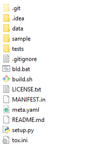
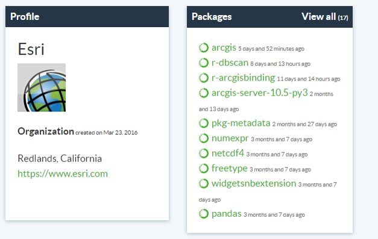
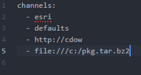
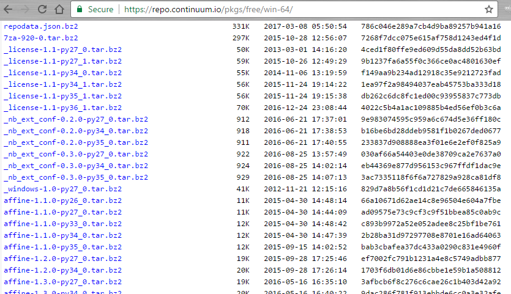

Python Package Management in ArcGIS Pro Using Conda
Clinton Dow
Overview of Conda in ArcGIS Pro
What is Conda?
- Python virtual environment and package manager
- Multiple instances of python.exe and supporting files
- Easily add/remove 3rd party code to projects
- Automates dependency handling
- Subset of Anaconda functionality
- Does not include all packages
- Command Line Interface only, no GUI
- Additional features supporting https://anaconda.org/
- Open Source, written in Python
Product Story
- ArcGIS heavily dependent on Python, shipped with specific version
- Locked-in to package versions ie: NumPy, SciPy
- Broken Python env breaks the application
- No package management
- Python Ecosystem becoming more robust
- Data Science/Visualization
- Machine Learning
- Scientific Libraries
- Desire for enhanced sharing experience
- Handles requirements
- Ease of distribution
Virtual Environments
- Concept
- ‘Virtual Machine Lite’
- Allows multiple side-by-side Pythons on one machine
- Different configurations for each Python installation
- Conda Environments
- Package Dependency SAT Solver
- Stored in the folder within the Pro installation
- Simply a folder on disk, nothing fancy
- Cheap to create, disposable/iterable
- Easy to replicate with metadata
Packages
- Concept
- Small units of functionality added to a kernel
- Unix/Linux concept (apt-get, yum, etc)
- Not Python exclusive (npm, nuget, etc)
- Versioning Friendly
- Multiple versions available at one time
- Each version may depend on different, additional packages
- Similar to shipping a package from a retailer
- Ingredients, Warning Labels, Instruction Manual
Package Structure

- Python Packaging Authority
- https://www.pypa.io/en/latest/
- https://packaging.python.org/distributing/
- Sample Github Project
- https://github.com/pypa/sampleproject
Channels
- Concept
- A source of related packages
- A TV channel is a source of related shows
- Public Channel
- Hosted on anaconda.org
- Free to create
- Similar to a public github repository
- Private Channel
- A webserver which hosts packages
- As customizable as any other web service

Anaconda.org Contributors and Organizations

- Similar structure to github organization/user repos
Channels (.condarc file) Structure
- Anaconda.org usernames as channel names
- Private Server as http://channel-name
- Local File as file:///file-name

Private Repository

- Simply a webserver hosting .tar.bz2 files
- Indexed with ‘conda index’ to create repodata.json
Scalability
- Packages easily deploy as webservices
- Container ecosystem (Docker etc)
- Automate setup of new workstations
- Saves times for Sys Admins
- Distribute to as few or as many users as required
- Leverage open-source Python packages to save time and costs
- Thousands of useful packages freely available
- Becoming an industry-standard Python utility
- Increased familiarity
- Lowered complexity of onboarding
ArcGIS Pro 2.0
- Enhanced Environment Control in the User Interface
- Integration with R tools and the r-python bridge for ArcGIS
ArcGIS Pro 2.1
- Adding packaging and channel support
- ArcPy package